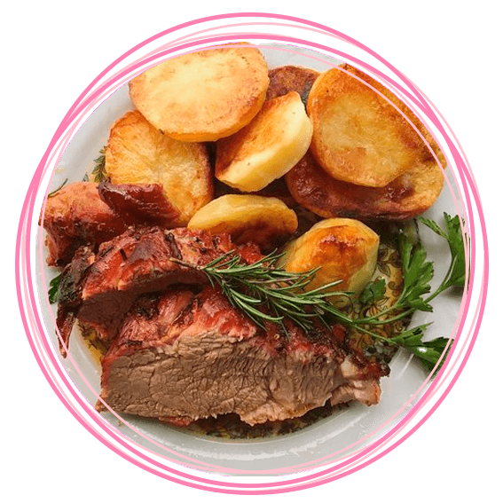

CARNE CON PAPAS AL HORNO
Elaboración:
- Se limpia bien la colita de cuadril tratando de no dejar ningún resto de grasa, se la mecha con la provenzal hecha del ajo y el perejil bien picado y se la coloca en una placa para horno con un poco de aceite, se salpimienta y se lleva a horno moderado a fuerte
- Cuando la carne comienza a tomar color se la da vuelta y se colocan las papas trozadas medianas en la placa y se lleva nuevamente al horno
- Las verduras varias se pueden agregarse a la provenzal finamente picados
- Se sirve cuando las papas estén blandas y la carne bien cocida

Ingredientes:
- 1 colita de cuadril
- 1 cabeza de ajo
- 1 cebolla
- 1 Kg de papas
- 4 zanahorias
- 2 ají morrón
- Perejíl
- Aceite de oliva c/n
- Sal y pimienta c/n